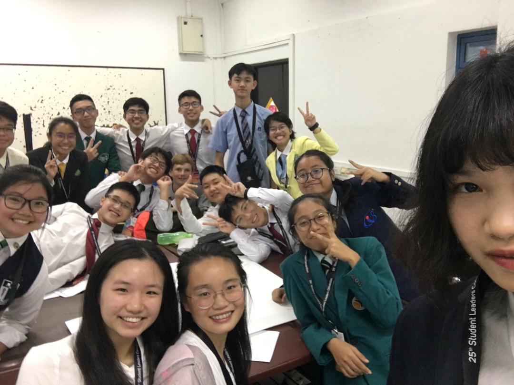

Youth Faculty 20: Technology as an Impediment
Under Youth Assembly 7: Technology
Hello! We are Youth Faculty 20, and the issue we are discussing is Technology as an impediment. Is technology always an enabler? Not always. Technology, despite having multiple benefits, results in impediment and problems from its usage. Technology refers to the application of scientific knowledge for practical purposes, while an impediment refers to a hindrance or obstruction in doing something.
There are 4 main impediments that we have identified: a) it negatively affects student development, b) it allows access to misleading information, c) it discourages independent and active learning, and d) it renders students to be over-reliant on technology for education.
Here are some of the effective strategies that we have thought of.
- To solve the issue of students’ development being negatively affected, students could put in more effort to ask teachers about their own strengths and weaknesses. Students can also learn to strike a balance between taking handwritten and online notes as well as avoiding multi-tasking on electronic devices. Student leaders can observe how students are coping with their schoolwork through student feedback sessions where students can voice their concerns regarding this issue.
- To deal with the impediment that is misleading information, student leaders can help to improve the students’ media literacy. We can do this by conducting workshops or campaigns to educate students on how to tell the difference between real and fake facts. This is because it is impossible to stop misleading information from being published. Hence, the best way to solve this problem is to avoid misleading information.
- To solve the problem that is technology discouraging independent and active learning, we can have activities that encourage and inculcate correct moral compass and inquisitive attitudes in students such that they will properly use various applications and websites that make work easier for them.
- The very last problem that we identified 4) overdependence on technology. Student leaders could organise campaigns to educate the students on the proper use of technology. Student leaders can also have days where the students do not use technology during the whole time they are in school, this could include the school equipment as well. This is in a way taking it back to the old school days. Students can also practice good habits to reduce unnecessary use of technology.
The Lens
The skit was mainly to animate how apps like Photomath and technology would actually affects students in real life. This clearly shows the causes, impacts, solutions and whatever we wanted to bring across in this Lens session. The interview-style was to mainly display the different stakes and view our stakeholders had in relation to technology being an impediment in education. The process of our Lens video and presentation went quite smoothly due to the fact that we had planned out what we were going to do before hand. However, we had a bit of a time constraint, but luckily our editor was very efficient. The presentation team did very elaborate slides to explain everything involved in our whole lens session, and we are all very proud of the end product.
Exhibition
After several hours of intense hard work and cooperation, we had managed to muster out our final products of one title board and four information boards representing the four impediments identified. Each masterfully crafted board includes crucial information regarding our topic, including the causes, impacts, and mitigating strategies for the specific impediment, as well as similar yet beautiful layouts and illustrations for ease of reading. We had also made use of inverting and propping our tables and chairs so as to provide maximum visibility to our posters, an intelligent and creative use of the limited materials provided for the setting up of our booth. Coupled with these boards are four members of the 20th Youth Faculty taking 30-minute shifts with the goal of explaining and elaborating the content to any interested parties.
In addition to our impeccable presentation skills and material, several advertising campaigns were subsequently launched so as to increase viewership. The 20th Youth Faculty sent our very own outstanding delegate, Jace Bong, up on stage to publicise our cause. Not only that, flyers and publicity headbands were also used to ensure that as many people as possible are made aware of our content.
Unfortunately, despite our greatest effort and thought having gone into this project, several areas for improvement still arised. One of the judges approached us in search of the SAUCE. In our haste, we had absent-mindedly disincluded our many citations used in the gathering of our information from our boards. Though we had saved these citations online, this still apparently affected the credibility of our information as a whole
Thank you to...
Ashika: Thank you to the amazing people in YF20. I think we all bonded really well and it was saddening to say goodbye. Thank you to the two facils for guiding us so well and really keeping us on track. Thank you everyone, for being so nice and friendly, and loving:)
Teresa: Thank you to everyone in YF20 because y’all made this YF fun+awesome and the convention enjoyable. It’s cool that we’ve grown so close in such a short span of time (let’s be real, we sort of only spent 3 days together) and I’m really thankful that everybody was extremely friendly despite our awkward start. Thank you Sophia and Zo-ren for being the best facils we could ever ask for and for guiding us every step of the way. :) It’s sad to say goodbye but I’m sure I won’t be forgetting anyone in a looooong time… love y’all <3
If you are a fellow student leader who wishes to implement change, we hope that the discussions and minutes that we have included are insightful and meaningful! SLC was indeed a memorable and purposeful event, and it has allowed us to delve deeper into pertinent societal issues that plague our world today. Thank you to the OT for their hard work, and YF20 hopes that more people see the need to step up and combat the impediments of technology as we progress into an automated and digital future :-)